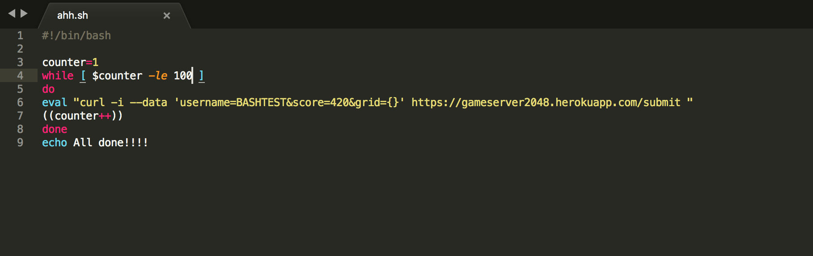
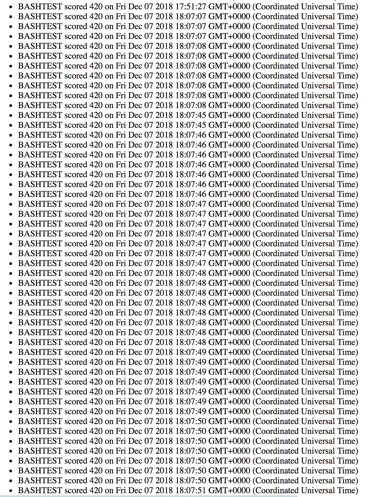
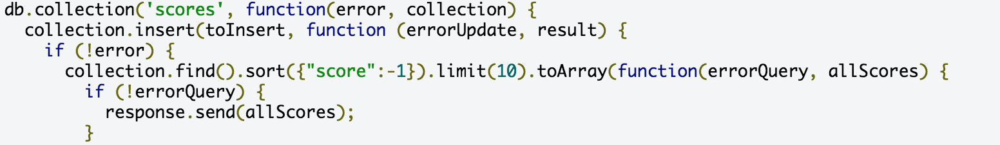
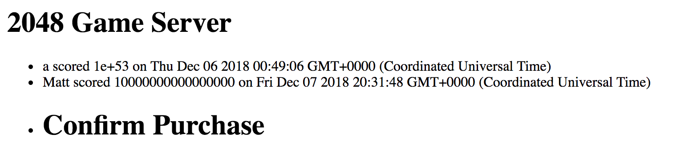
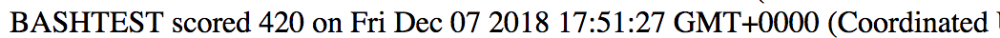

The website I was tasked with evaluating was a gameserver for the popular game, 2048. The server uses MongoDB, node.js, and express in order to provide the backend to store scores and provide a scoreboard.
I tested the application using curl commands in the terminal, as well as bash scripts. I saw results happen live (or mostly live because it was being really slow) on https://gameserver2048.herokuapp.com/
The website is very vulnerable to a number of attacks. There is no form of security in the username, score, or time input, so someone could put in bad code to make the page act differently. There also appears to be no sort of limit on how often people can submit to the page, so someone could submit, say, 1,000 requests in a second and flood the server without any resistance.
There is an issue of XSS, because the username field does not have any sort of protection, one can simply POST script tags into the fields to make whatever they want to happen, happen. This opens up a plethora of possibilities, including linking to other malicious websites and posting alerts.
The error is within the POST channel of the server. There is no type of security measure to disable unwanted third party script tags.
High. Given that someone could run any kind of javascript they want to, the severity of this issue is huge. This gives unlimited potential to potential malicious users.
The image details that users are free to enter (in this case, username) data freely and that it is inserted without any sort of parsing or security. This is how the script tags can be included.
I did something a bit more innocent with XSS by including an alert tag. This is clearly unwanted behavior, and the fact that I am able to include this alert tag means that other kinds of scripts can be as well.
To fix this issue, some kind of escape is required to stop the script tag. An example would be to parse and delete a < or > from the script tag itself to stop it from running. Or just insert it into the HTML itself for an HTML escape (as plain text, not code).
There is an issue in which there is no regulation for input at all in the server. So someone can theoretically upload a dangerous number of inputs and completely flood the server. I could conceivably use a bash script to simulate a user curling data to the server at an unrealistic speed.
The error is within both the server and the modified 2048 data, because there is no limit at all to how much you can POST or feed data into the database.
High. This is a severe problem, given that someone could feed a potentially harmful amount of data into the server. If someone is hosting on Heroku, it could charge them money for using too many dynos. The financial risk already makes this severe! In addition, someone could crash a server or exceed the bandwidth. Anything that could interfere with the operation of it is severe.
This relatively simple bit of code shown below (which I was able to learn how to do after reading a 1 page tutorial and doing one google search to clarify something) can flood the server with however many lines of my choosing. Curling whatever requests I want, at whatever amount, is dangerous. I found it because of a piazza post by Ming, who showed that someone had overloaded the item list with many entries. It also is an intuitive thought to think "is there anyway to overload this" when thinking about a database. 
This bit below shows how one could flood the game server. I capped it at a hundred, but it is clear how it could have been worse.
To fix this issue, there must be a cap on how often someone can POST to a page. There is no conceivable way that someone would be able to complete a game of 2048 within less than a second, so implementing a time cap would be the best way to go. This should be implemented into the POST channel in the server, because there would be no reason to use it unless one was legitimately trying to post scores.
This exploit is much like the username XSS exploit, but this one is in the score region: you can make up whatever score you want, which takes away all legitimacy for game scores. This defeats the purpose of the app.
The error is once again within the POST channel.
In the described context, low-medium. Unless someone posts a malicious script like in the username section, this exploit only has the potential to completely take away all credibility of the scoreboard. What good is a scoreboard after all, if the scores are not accurate?
This issue is similar to the username issue, because you can put whatever you please into the fields. The one saving grace is that one cannot enter non numbers, because the data are sorted before being put into the database.
This bit below shows how one could spoof whatever score they want. I am not that good at 2048, yet I appear near the top of the leaderboard.
And clearly, BASHTEST did not score 420.
To fix this issue would mean to not allow users to just input whatever data they want using curl. This is just like the problem of intercepting the POST to the shopping cart, resulting in $1 plasma screen TVs. Rejecting all data in areas that are not allowed would be cogent.
Ultimately, the server side of this application must be reworked. The methods by which information can be POSTed are too open.